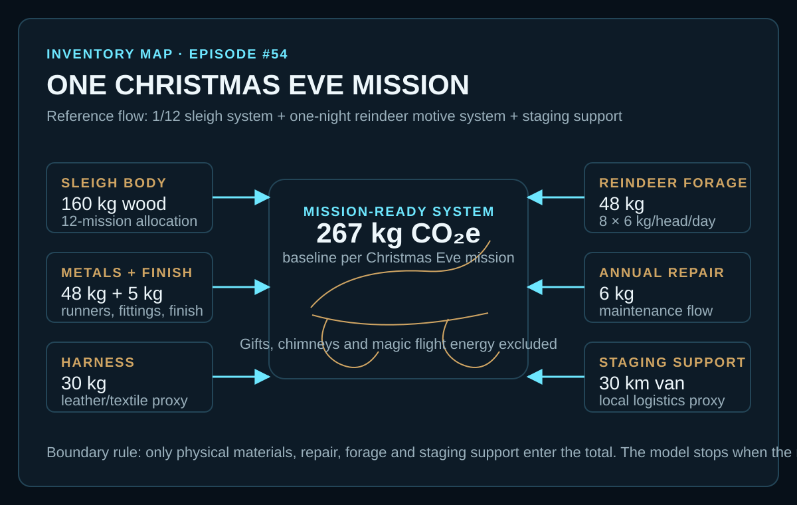
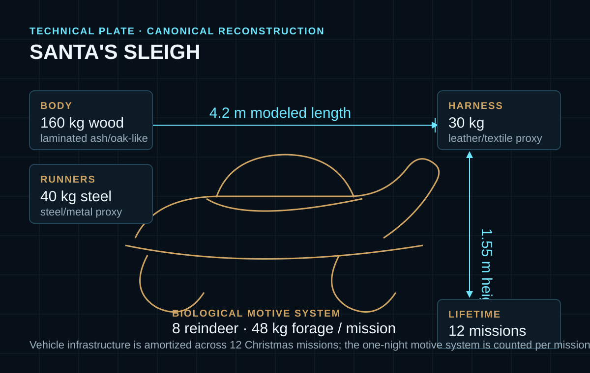
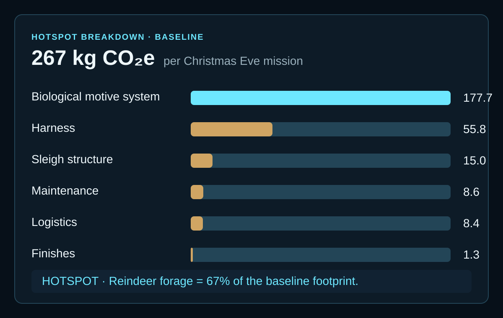

EPISODE #54 · MYTHS & LEGENDS
Santa's Sleigh
If magic is not a fuel, what physical system still has to carry Christmas Eve?
THE SUBJECT
A reusable vehicle powered by a biological motive system.
The approved episode freezes the functional unit before calculation: one reusable airborne gift-delivery sleigh completing one Christmas Eve mission. The reference flow is one twelfth of the sleigh system, one night of reindeer motive support and local staging support.
The physical reconstruction uses one canonical 4.2 m sleigh with a 160 kg laminated-wood body, 40 kg of steel runners and brackets, a 30 kg leather/textile harness system and a twelve-mission lifetime. Eight reindeer provide the motive system, with a baseline feeding rate of 6 kg per head for the mission day.
Gifts, household chimney entry, workshop construction and magic flight energy are outside the modeled boundary. The episode is a narrative engineering reconstruction with documented sources, engineering assumptions and declared proxies; it is not a verified LCA.
4.2 metre vehicle
The canonical sleigh is 4.2 m long and 1.55 m high, with a reusable structure allocated over 12 Christmas missions.
Eight reindeer
The motive system is modeled through 48 kg of forage: 8 reindeer × 6 kg/head/day for one mission.
67% hotspot
Reindeer forage contributes 177.7 kg CO₂e and dominates the 267 kg CO₂e baseline.
Proxy-sensitive
Both the feeding-rate assumption and the harness emission-factor choice materially change the result.
VISUAL MODEL
From durable sleigh to one-night mission
The model separates amortized vehicle infrastructure from the biological and logistics flows counted for each Christmas Eve mission.


LIFE CYCLE INVENTORY
Every counted flow has a quantity and a factor route
Values follow the approved carousel. Derived contributions are shown only where the published quantity, factor and 1/12 lifetime allocation support the calculation directly.
| Stage | Component / activity | Activity data | Climate change | Modelling basis |
|---|---|---|---|---|
| Vehicle | Wood body + rails | 160 kg | 3.6 kg CO₂e / mission | Engineered mass; DEFRA 2026 primary wood factor 0.270 kg CO₂e/kg; 1/12 service-life allocation. |
| Vehicle | Steel runners + brackets | 40 kg | 9.5 kg CO₂e / mission | Engineered mass; DEFRA 2026 steel/metal proxy 2.862 kg CO₂e/kg; 1/12 service-life allocation. |
| Vehicle | Bells + fittings | 8 kg | 1.9 kg CO₂e / mission | Metal proxy; 1/12 service-life allocation. Included in the published 15.0 kg CO₂e sleigh-structure contribution. |
| Vehicle | Harness set | 30 kg | 55.8 kg CO₂e / mission | DEFRA 2026 primary-clothing proxy 22.310 kg CO₂e/kg; 1/12 service-life allocation. Leather-specific context is tested separately as a sensitivity. |
| Vehicle | Finishes + small parts | 5 kg | 1.3 kg CO₂e / mission | DEFRA 2026 average-plastics proxy 3.171 kg CO₂e/kg; 1/12 service-life allocation. |
| Maintenance | Repair materials | 6 kg annual | 8.6 kg CO₂e | Annual repair flow. The approved artwork reports the contribution; its detailed factor route remains in the external source register rather than on the carousel. |
| Motive system | Reindeer forage | 48 kg | 177.7 kg CO₂e | 8 reindeer × 6 kg/head/day; DEFRA 2026 Food & drink proxy 3.701 kg CO₂e/kg. The feeding quantity is literature-supported and sensitivity-tested. |
| Logistics | Workshop-to-staging van | 30 km | 8.4 kg CO₂e | Local support proxy; DEFRA 2026 van freight support 0.280 kg CO₂e/km. |
Included
Sleigh materials, harness set, annual repair, reindeer forage and workshop-to-staging van support.
Excluded
Toy manufacturing, household chimney entry, workshop construction and magic flight energy.
Cut-off event
The model stops when the mission-ready sleigh leaves staging with gifts already outside the boundary.
Proxy disclosure
Food & drink is used as a conservative forage proxy; primary clothing is used for harness because DEFRA 2026 has no dedicated leather-harness factor.
HOTSPOT
The biological engine outweighs the sleigh
Once the reusable vehicle is amortized, the one-night feeding flow becomes the dominant climate contribution.

Main result
267 kg CO₂e
Per Christmas Eve mission.
Biological motive system
177.7 kg CO₂e · 67%
Reindeer forage is the dominant hotspot.
Harness
55.8 kg CO₂e
The largest amortized vehicle-system contribution.
Sleigh structure
15.0 kg CO₂e
Secondary after the twelve-mission service-life allocation.
Sensitivity A · feeding rate
4 kg/head/day → 208 kg CO₂e
6 kg/head/day → 267 kg CO₂e
8 kg/head/day → 326 kg CO₂e
Only kilograms of forage per reindeer per mission day change.
Sensitivity B · harness factor
Re-used clothing proxy → 211 kg CO₂e
Primary clothing baseline → 267 kg CO₂e
Leather literature context → 351 kg CO₂e
The physical harness remains fixed; only its emission-factor context changes.
What the model tells us
The sleigh is not the main burden. Biology replaces fuel, proxies are decisive and the boundary prevents the episode from becoming a footprint of Christmas retail.
What remains uncertain
The forage rate and the harness factor are material assumptions. Magic flight energy remains excluded rather than receiving an invented emission factor.
THE VERDICT
The miracle is boundary-free; the model is not.